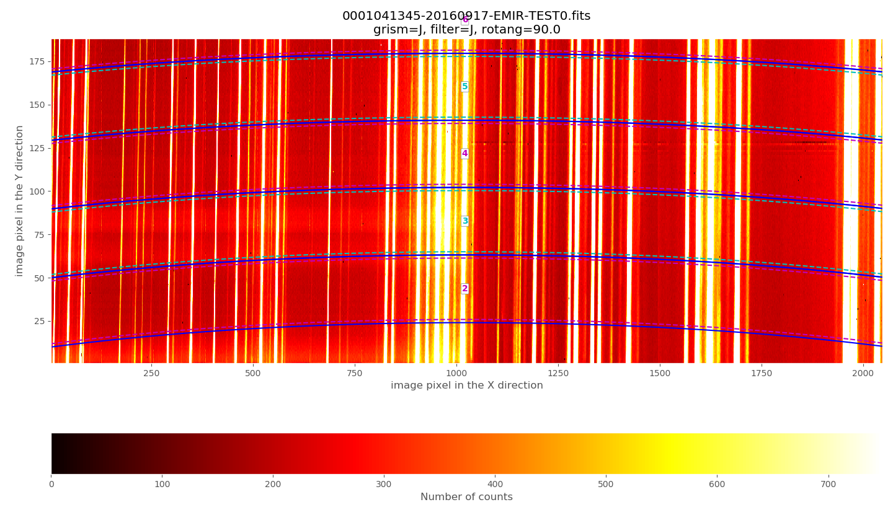
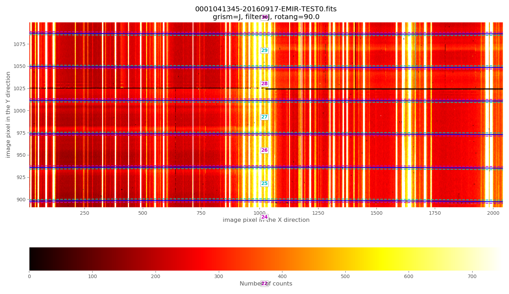
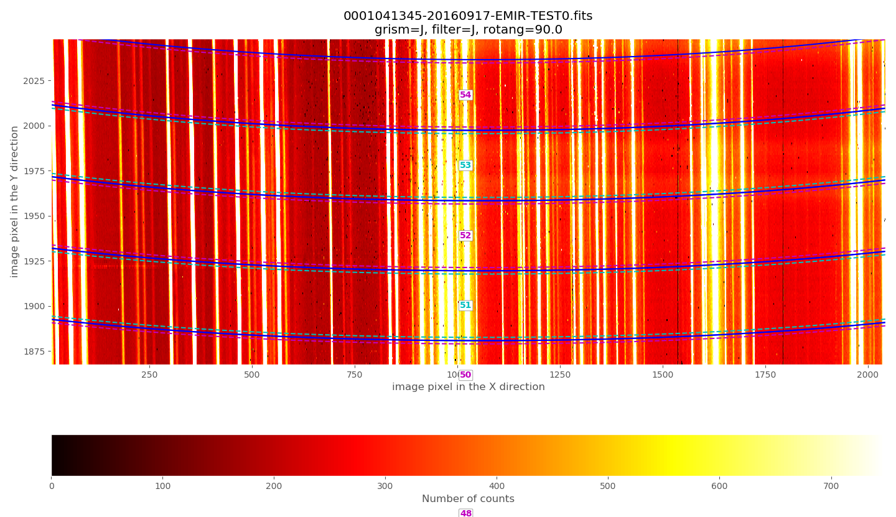
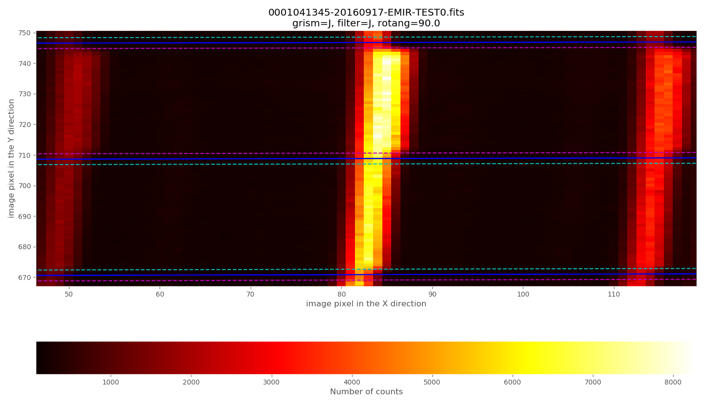
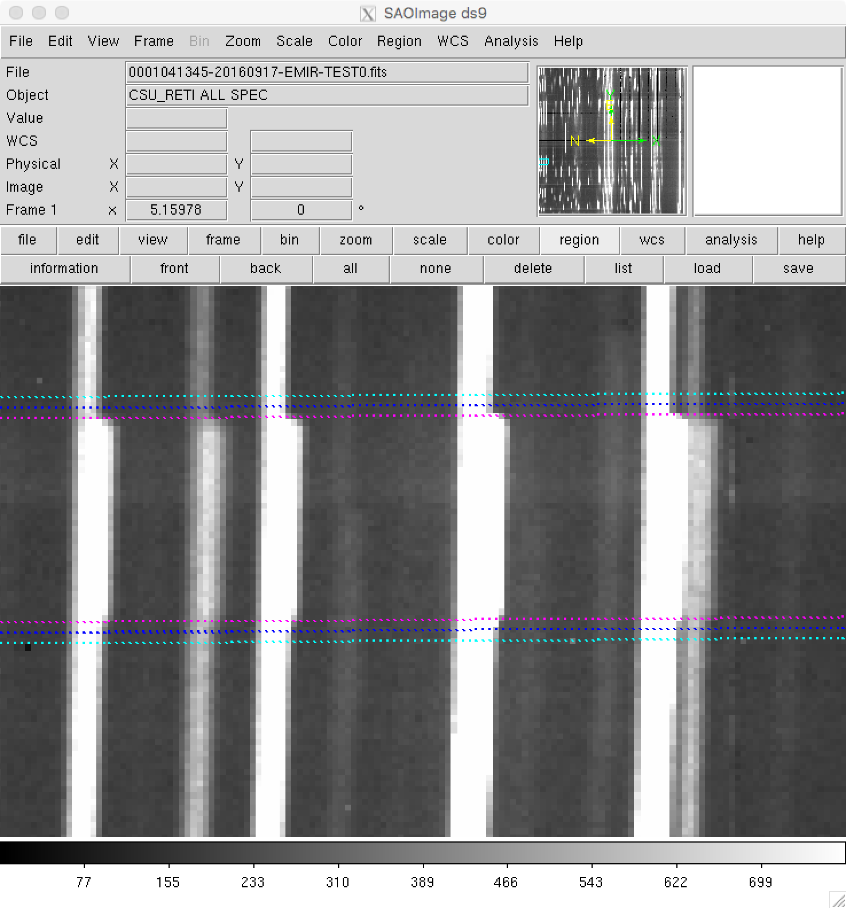
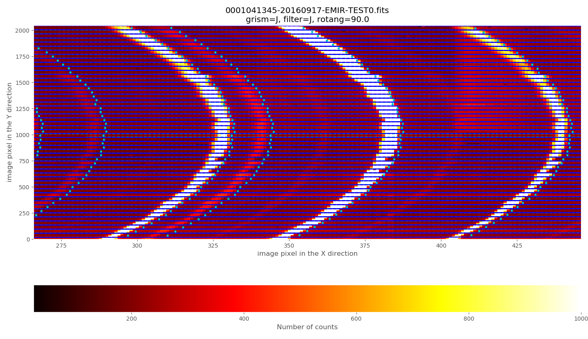
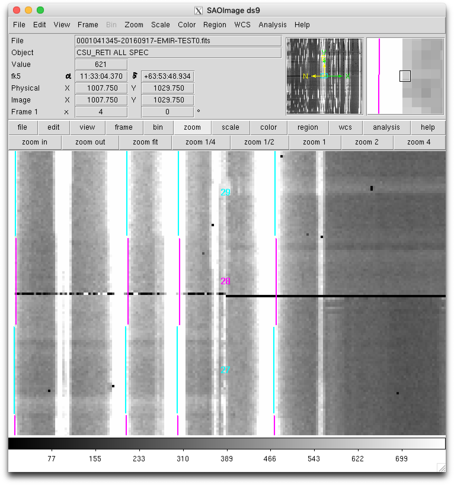
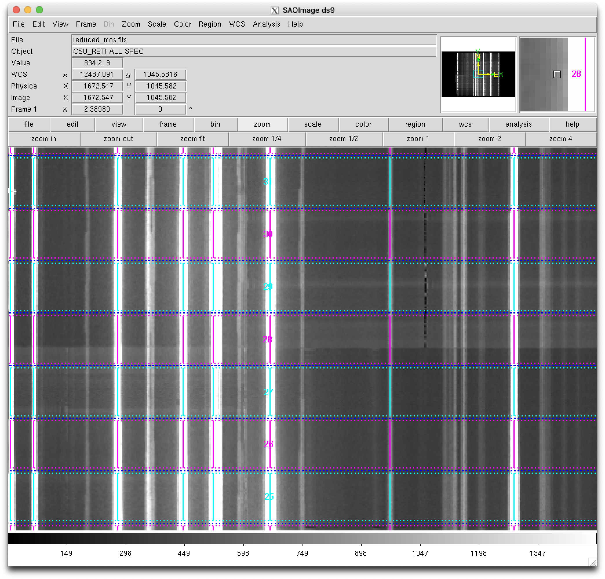

Simple example: arc exposure
Warning
All the commands are assumed to be executed in a terminal running the bash shell (or a compatible one).
Don’t forget to activate the same Python environment employed to install
PyEmir. In this document, the prompt (emir) $ will indicate that this
is the case.
The rectification and wavelength calibration of any EMIR spectroscopic image can be obtained with two levels of quality:
Preliminary (empirical) calibration, without auxiliary calibration images, computed from the empirical calibration derived by the instrument team.
This is the on-line reduction perfomed at the GTC while gathering the images.
Note that although the empirical calibrations were computed using a large set of initial calibration (continuum and arc) images, it is not expected that the absolute wavelength calibration to be correct within a few pixels nor the relative wavelength calibration between slitlets to agree within one pixel. For that reason, this rectified and wavelength calibrated image has been defined as a preliminary version. In addition, the boundaries between slitlets can also exhibit small deviations (a few pixels) with respect to the empirical calibration. Anyhow, this empirical calibration constitutes a good starting point in order to have a look to the data.
Refined calibration, which requires either auxilary arc exposures or a more detailed reduction of scientific images with good signal on the airglow emission (OH emission lines). In this case, the preliminary calibration is refined in order to guarantee that both, the absolute wavelength calibration and the relative wavelength calibration between slitlets do agree within a fraction of a pixel. In addition, the boundaries between the slitlets can also be shifted in order to match the real data.
Preliminary rectification and wavelength calibration
Warning
Before continuing, make sure that you have already initialize the file tree structure by following the instructions provided in the Initial file tree section of this documentation.
Assume you want to perform the rectification and wavelength calibration of the following raw spectroscopic images (corresponding in this case to spectral arc lamps):
0001041345-20160917-EMIR-TEST0.fits
0001041348-20160917-EMIR-TEST0.fits
0001041351-20160917-EMIR-TEST0.fits
These images should be similar since they were taken consecutively with the same instrument configuration. In this case, the median of the three raw images will be computed and a preliminary rectified and wavelength calibrated image will be generated from that median image.
Those three files (together with some additional files that you will need to follow this simple example) are available as a compressed tgz file: pyemir_arc_calibration_tutorial_v1.tgz.
Move to the directory where you have deployed the initial file tree structure containing the basic PyEmir calibration files (see Initial file tree).
Decompress there the previously mentioned tgz file:
(emir) $ tar zxvf pyemir_arc_calibration_tutorial_v1.tgz
...
...
(emir) $ rm pyemir_arc_calibration_tutorial_v1.tgz
This action should have populated the file tree with the 3 arc exposures
(placed wihtin the data subdirectory) and some additional auxiliary files:
(emir) $ tree
.
├── 0_preliminary_calibration.yaml
├── 1_refined_calibration.yaml
├── control.yaml
└── data
├── 0001041345-20160917-EMIR-TEST0.fits
├── 0001041348-20160917-EMIR-TEST0.fits
├── 0001041351-20160917-EMIR-TEST0.fits
├── master_bpm.fits
├── master_dark_zeros.fits
├── master_flat_ones.fits
├── master_flat_spec.fits
├── rect_wpoly_MOSlibrary_grism_H_filter_H.json
├── rect_wpoly_MOSlibrary_grism_J_filter_J.json
├── rect_wpoly_MOSlibrary_grism_K_filter_Ksp.json
├── rect_wpoly_MOSlibrary_grism_LR_filter_HK.json
└── rect_wpoly_MOSlibrary_grism_LR_filter_YJ.json
You can easily examine the header of the three arc files using the astropy
utility fitsheader:
(emir) $ fitsheader data/00010413*fits -k object -k grism -k filter -k exptime -k date-obs -f
filename OBJECT GRISM FILTER EXPTIME DATE-OBS
---------------------------------------- ----------------- ----- ------ -------- ----------------------
data/0001041345-20160917-EMIR-TEST0.fits CSU_RETI ALL SPEC J J 1.999288 2016-09-17T18:32:29.61
data/0001041348-20160917-EMIR-TEST0.fits CSU_RETI ALL SPEC J J 1.999288 2016-09-17T18:32:32.68
data/0001041351-20160917-EMIR-TEST0.fits CSU_RETI ALL SPEC J J 1.999288 2016-09-17T18:32:35.74
Have a look to any of the tree raw arc images (the three images are similar).
For that purpose you can use ds9 or the visualization tool provided with
numina:
(emir) $ numina-ximshow data/0001041345-20160917-EMIR-TEST0.fits
{kind=link}
The wavelength direction corresponds to the horizontal axis, whereas the spatial direction is the vertical axis. This image was obtained with all the slitlets configured in longslit format. The arc lines exhibit an important geometric distortion when moving along the spatial direction even in this longslit configuration.
The slitlet configuration can be easily displayed using the auxiliay PyEmir
script pyemir-display_slitlet_arrangement:
(emir) $ pyemir-display_slitlet_arrangement data/0001041345-20160917-EMIR-TEST0.fits
...
...
{kind=link}
The above image clearly shows that all CSU bars were configured to create aligned slitlets forming a (pseudo) longslit.
Note
Remember that the numina script is the interface with GTC pipelines.
In order to execute PyEmir recipes you should use type something like:
(emir) $ numina run <observation_result_file.yaml> -r <requirements_file.yaml>
where <observation_result_file.yaml> is an observation result file in
YAML format, and <requirements_files.yaml> is a requirements file, also
in YAML format.
YAML is a human-readable data serialization language (for details see YAML Syntax)
The current directory contains the following two files required to execute the reduction recipe needed in this case:
The observation result file: 0_preliminary_calibration.yaml
This is what we call an observation result file, which basically contains the reduction recipe to be applied and the images involved.
1id: _0001041345
2instrument: EMIR
3mode: GENERATE_RECTWV_COEFF
4frames:
5 - 0001041345-20160917-EMIR-TEST0.fits
6 - 0001041348-20160917-EMIR-TEST0.fits
7 - 0001041351-20160917-EMIR-TEST0.fits
8enabled: True
The
idvalue is an arbitrary label that is employed to generate the name of two auxiliary subdirectories. In this example the two subdirectories will be namedobsid_0001041345_workandobsid_0001041345_results(see below), where the intermediate results and the final results are going to be stored, respectively. Note that we have arbitrarily chosen the 10 digits of the unique running number assigned to the first image of this set.Not surprisingly, the key
instrumentis set to EMIR (do not forget that Numina is at present also employed to reduce MEGARA data, and hopefully future GTC instruments).The key
modeindicates the identification of the reduction recipe (GENERATE_RECTWV_COEFFin this example).The key
frameslists the images to be combined.The key
enabled: Trueindicates that this block is going to be reduced. As it is going to be shown later, it is possible to concatenate several blocks in the same observation result file; the user can easily activate/deactivate the execution of particular reduction recipes (i.e. blocks in this file) just by modifying this flag.
The requirements file: control.yaml
This is the requirements file, containing the expected name of generic calibration files. You do not need to modify anything here.
1version: 1
2products:
3 EMIR:
4 - {id: 2, type: 'MasterBadPixelMask', tags: {}, content: 'master_bpm.fits'}
5 - {id: 3, type: 'MasterDark', tags: {}, content: 'master_dark_zeros.fits'}
6 - {id: 4, type: 'MasterIntensityFlat', tags: {}, content: 'master_flat_spec.fits'}
7 - {id: 5, type: 'MasterSpectralFlat', tags: {}, content: 'master_flat_spec.fits'}
8 - {id: 11, type: 'MasterRectWave', tags: {grism: J, filter: J}, content: 'rect_wpoly_MOSlibrary_grism_J_filter_J.json'}
9 - {id: 12, type: 'MasterRectWave', tags: {grism: H, filter: H}, content: 'rect_wpoly_MOSlibrary_grism_H_filter_H.json'}
10 - {id: 13, type: 'MasterRectWave', tags: {grism: K, filter: Ksp}, content: 'rect_wpoly_MOSlibrary_grism_K_filter_Ksp.json'}
11 - {id: 14, type: 'MasterRectWave', tags: {grism: LR, filter: YJ}, content: 'rect_wpoly_MOSlibrary_grism_LR_filter_YJ.json'}
12 - {id: 15, type: 'MasterRectWave', tags: {grism: LR, filter: HK}, content: 'rect_wpoly_MOSlibrary_grism_LR_filter_HK.json'}
13 - {id: 21, type: 'RefinedBoundaryModelParam', tags: {grism: J, filter: J}, content: 'final_multislit_bound_param_grism_J_filter_J.json'}
14 - {id: 22, type: 'RefinedBoundaryModelParam', tags: {grism: H, filter: H}, content: 'final_multislit_bound_param_grism_H_filter_H.json'}
15 - {id: 23, type: 'RefinedBoundaryModelParam', tags: {grism: K, filter: Ksp}, content: 'final_multislit_bound_param_grism_K_filter_Ksp.json'}
16 - {id: 24, type: 'RefinedBoundaryModelParam', tags: {grism: LR, filter: YJ}, content: 'final_multislit_bound_param_grism_LR_filter_YJ.json'}
17 - {id: 25, type: 'RefinedBoundaryModelParam', tags: {grism: LR, filter: HK}, content: 'final_multislit_bound_param_grism_LR_filter_HK.json'}
18requirements:
19 EMIR:
20 default:
21 FULL_DITHERED_IMAGE:
22 - {name: 'x_offsets', tags: {}, content: 'ref_object_pos.txt'}
Numina execution
You are ready to execute the reduction recipe indicated in the file
0_preliminary_calibration.yaml (in this case the reduccion recipe named
GENERATE_RECTWV_COEFF):
(emir) $ numina run 0_preliminary_calibration.yaml -r control.yaml
...
...
After the execution of the previous command line, two subdirectories should have been created:
a work subdirectory:
obsid_0001041345_work/a results subdirectory:
obsid_0001041345_results/
The work subdirectory
(emir) $ tree obsid_0001041345_work/
obsid_0001041345_work/
├── 0001041345-20160917-EMIR-TEST0.fits
├── 0001041348-20160917-EMIR-TEST0.fits
├── 0001041351-20160917-EMIR-TEST0.fits
├── ds9_arc_rawimage.reg
├── ds9_arc_rectified.reg
├── ds9_boundaries_rawimage.reg
├── ds9_boundaries_rectified.reg
├── ds9_frontiers_rawimage.reg
├── ds9_frontiers_rectified.reg
├── ds9_oh_rawimage.reg
├── ds9_oh_rectified.reg
├── index.pkl
├── master_bpm.fits
├── master_dark_zeros.fits
├── master_flat_spec.fits
├── median_spectra_full.fits
├── median_spectra_slitlets.fits
├── median_spectrum_slitlets.fits
└── reduced_image.fits
All the relevant raw images 00010413*-EMIR-TEST0.fits have been copied into
this working directory in order to preserve the original files.
When disk space is an issue, it is possible to execute numina indicating that
links (instead of actual copies of the original raw files) must be placed in
the work subdirectory. This behaviour is set using the parameter
--link-files:
(emir) $ numina run 0_preliminary_calibration.yaml --link-files -r control.yaml
...
...
(emir) $ tree obsid_0001041345_work/
obsid_0001041345_work/
├── 0001041345-20160917-EMIR-TEST0.fits -> /Users/cardiel/w/GTC/emir/work/z_tutorials_201907/w_arc_calibration_tutorial/data/0001041345-20160917-EMIR-TEST0.fits
├── 0001041348-20160917-EMIR-TEST0.fits -> /Users/cardiel/w/GTC/emir/work/z_tutorials_201907/w_arc_calibration_tutorial/data/0001041348-20160917-EMIR-TEST0.fits
├── 0001041351-20160917-EMIR-TEST0.fits -> /Users/cardiel/w/GTC/emir/work/z_tutorials_201907/w_arc_calibration_tutorial/data/0001041351-20160917-EMIR-TEST0.fits
├── ds9_arc_rawimage.reg
├── ds9_arc_rectified.reg
├── ds9_boundaries_rawimage.reg
├── ds9_boundaries_rectified.reg
├── ds9_frontiers_rawimage.reg
├── ds9_frontiers_rectified.reg
├── ds9_oh_rawimage.reg
├── ds9_oh_rectified.reg
├── index.pkl
├── master_bpm.fits -> /Users/cardiel/w/GTC/emir/work/z_tutorials_201907/w_arc_calibration_tutorial/data/master_bpm.fits
├── master_dark_zeros.fits -> /Users/cardiel/w/GTC/emir/work/z_tutorials_201907/w_arc_calibration_tutorial/data/master_dark_zeros.fits
├── master_flat_spec.fits -> /Users/cardiel/w/GTC/emir/work/z_tutorials_201907/w_arc_calibration_tutorial/data/master_flat_spec.fits
├── median_spectra_full.fits
├── median_spectra_slitlets.fits
├── median_spectrum_slitlets.fits
└── reduced_image.fits
In addition, some intermediate images are also stored here during the execution of the reduction recipe. In particular:
reduced_image.fits: result of applying, to the combination of the three00010413*fits files, the bad-pixel mask, bias, dark and flatfield. Note that, albeit its name, this is not a rectified and wavelength calibrated image. This is simply a temporary image, stored in this working directory for double-checking purposes.ds9-region files for raw images (before rectification and wavelength calibration):
ds9_frontiers_rawimage.reg: ds9-region file with the frontiers between slitlets, valid for the raw-type images (images with the original distortions).ds9_boundaries_rawimage.reg: ds9-region file with the boundaries for each slitlet, valid for the raw-type images (images with the original distortions).ds9_arc_rawimage.reg: ds9-region file with expected location of arc lines from the EMIR calibration lamps.ds9_oh_rawimage.reg: ds9-region file with expected location of airglow (OH) sky lines.
ds9-region files for rectified and wavelength calibrated images:
ds9_frontiers_rectified: ds9-region file with the frontiers between slitlets, valid for rectified and wavelength calibrated images.ds9_boundaries_rectified: ds9-region file with the boundaries for each slitlet, valid for rectified and wavelength calibrated images.ds9_arc_rectified.reg: ds9-region file with expected location of arc lines from the EMIR calibration lamps.ds9_oh_rectified.reg: ds9-region file with expected location of airglow (OH) sky lines.
images with averaged spectra:
median_spectra_full.fits: image with the same size as the rectified and wavelength calibrated image, where the individual 38 spectra of each slitlet have been replaced by its median spectrum.median_spectra_slitlets.fits: image with simply 55 spectra, corresponding to the 55 median spectrum of each slitlet.median_spectrum_slitlets.fits: single median spectrum, with signal in all pixels with wavelength coverage in any of the 55 slitlets.
The results subdirectory
(emir) $ tree obsid_0001401345_results/
obsid_0001401345_results/
├── processing.log
├── rectwv_coeff.json
├── reduced_mos.fits
├── result.json
└── task.json
The main results are stored separately in this last subdirectory. The important files here are:
reduced_mos.fitsis the preliminary version of the rectified and wavelength calibrated image (please, keep reading).rectwv_coeff.json: rectification and wavelength calibration polinomial coefficients derived from the empirical model, and computed for the specific CSU configuration of the considered raw images.
You can easily display the last image using ds9 or the visualization tool
provided with numina:
(emir) $ numina-ximshow obsid_0001041345_results/reduced_mos.fits --z1z2 0,1000
{kind=link}
The wavelength calibration coefficientes are stored in the usual FITS keywords
CRPIX1,CRVAL1andCDELT1:(emir) $ fitsheader obsid_0001041345_results/reduced_mos.fits -k crpix1 -k crval1 -k cdelt1 -f filename CRPIX1 CRVAL1 CDELT1 ----------------------------------------- ------ ------- ------ obsid_0001041345_results/reduced_mos.fits 1.0 11200.0 0.77Prefixed
CRVAL1andCDELT1values have been stablished for the different grism+filter combinations (CRPIX1=1is employed in all cases). The goal is that all the rectified and wavelength calibrated images, corresponding to raw images obtained the same grism+filter, have the same linear coverage and sampling in wavelength, which should facilitate the scientific analysis of images obtained with distinct CSU configurations.Note that the image dimensions are now NAXIS1=3400 and NAXIS2=2090:
(emir) $ fitsheader obsid_0001041345_results/reduced_mos.fits -k naxis* -f filename NAXIS NAXIS1 NAXIS2 ----------------------------------------- ----- ------ ------ obsid_0001041345_results/reduced_mos.fits 2 3400 2090NAXIS1has been enlarged in order to accommodate wavelength calibrated spectra for slitlets in different locations along the spectral direction (i.e., with different wavelength coverage). For that reason there are empty leading and trailing areas (with signal set to zero) in the wavelength direction.NAXIS2has also been slightly enlarged (from 2048 to 2090) in order to guarantee that all the rectified slitlets have exactly the same extent in the spatial direction (38 pixels). In the configuration of this particular example (grism J + filter J) slitlet#1 and slitlet#55 fall partially or totally outside of the spatial coverage of the EMIR detector. For that reason the first 38 pixels (slitlet #1) and the last 38 pixels (slitlet#55) in the vertical (spatial) direction are also set to zero in the reduced image.The coordinates of the useful rectangular region of each slitlet in the rectified and wavelength calibrated image are stored in the FITS header under the keywords:
IMNSLT??(minimum Y pixel)IMXSLT??(maximum Y pixel)JMNSLT??(minimum X pixel)JMXSLT??(maximum X pixel)
where
??runs from 01 to 55 (slitlet number). In principleIMNSLT??andIMXSLT??are always the same for all the grism + filter combinations, and are independent of the slitlet location along the wavelength direction (X axis). This guarantees that reduced images will have each slitlet always spanning the same location in the spatial direction (Y axis). However,JMNSLT??andJMXSLT??will change with the location of the slitlets in the spectral direction (X axis), since the actual location of each slitlet determines its resulting wavelength coverage.
In the simple example just described, we have straightforwardly executed the
reduction recipe GENERATE_RECTWV_COEFF using the empirical model for
rectification and wavelength calibration. This is good enough for a preliminary
inspection of the data (for example when observing at the telescope), but it is
possible to do a better job with some extra effort. For example, having a look
to the preliminary rectified and wavelength calibrated image (making a zoom in
a relatively narrow range in the X direction) it is clear that the relative
wavelength calibration between slitlets does not agree within roughtly 1 pixel:
(emir) $ numina-ximshow obsid_0001041345_results/reduced_mos.fits --bbox 1920,2050,1,2090 --z1z2 0,11000
{kind=link}
In addition, the absolute wavelength calibration is also wrong by a few pixels, as it is described below.
Refined rectification and wavelength calibration
The user can obtain a more refined rectified and wavelength calibrated image using precise wavelength calibration data. For this purpose one can use arc exposures (obtained just before or after de scientific images), or even the scientific images themselves, when the airglow emission (OH emission lines) are brigth enough to be employed as wavelength signposts).
In this simple example, since the image we are trying to reduce is precisely an arc exposure, we are using its own arc-line set to refine the calibration.
Important: The following process only works for arc images obtained when the 3 types of arc lamps were simultaneously ON during the exposure time. An easy way to check that this was really the case is to examine the corresponding status keywords:
(emir) $ fitsheader obsid_0001041345_results/reduced_mos.fits -k lampxe* -k lampne* -k lamphg* -f
filename LAMPXE1 LAMPXE2 LAMPNE1 LAMPNE2 LAMPHG1 LAMPHG2
----------------------------------------- ------- ------- ------- ------- ------- -------
obsid_0001041345_results/reduced_mos.fits 1 1 1 1 1 1
Note that the EMIR calibration unit has 3 types of arc lamps: Xe, Ne, and Hg (actually two lamps of each type). In principle the six lamps should be ON (keyword = 1) for the refinement procedure to work properly. If separate exposures were obtained for each lamp type, the user must previously combine the images, multiplying each frame by the appropiate factor in order to simulate simultaneous exposures of the three arc lamp types with the same exposure time.
Warning
Before attempting to obtain a reasonable rectified and wavelength calibrated
image, it is important to understand that the empirical calibration does not
guarantee a perfect job when determining the slitlet location along the
spatial direction (Y axis) nor in the wavelength direction (X axis). These
two effects can be estimated either making use of the script
pyemir-overplot_boundary_model, or by overplotting ds9-region files on
the images. Both methods are described in the next subsections).
Checking the spatial direction (Y axis)
Note
If you prefer to use ds9 instead of the default PyEmir graphical output
for the following examples, please keep reading anyway and wait for
additional explanations below.
For example, we can execute the auxiliary script
pyemir-overplot_boundary_model with the first of the three raw arc images
previously used (since the three images were obtained consecutively with
exactly the same configuration, we can choose any of them):
(emir) $ pyemir-overplot_boundary_model \
data/0001041345-20160917-EMIR-TEST0.fits \
--rect_wpoly_MOSlibrary data/rect_wpoly_MOSlibrary_grism_J_filter_J.json
{kind=link}
Zooming in the lower region:
{kind=link}
Zooming in the middle region:
{kind=link}
Zooming in the upper region:
{kind=link}
The above plots show the selected image with the frontiers and boundaries of each slitlet overplotted. Here a clarification is needed:
Frontiers: separation between slitlets. In the above plots frontiers are displayed with blue lines running from left to right. These lines are curved due to the geometric distortions.
Boundaries: more conservative slitlet limits, avoiding a few pixels too close to the frontiers. Boundaries have been determined by examining continuum lamp exposures and selecting regions were the slitlet illumination is relatively flat. Note that, by construction, the CSU bars create a small (but detectable) decrease in the slitlet width at the frontiers between bars. The boundary limits are displayed alternatively with cyan and magenta lines (with the same color as the one employed in the label indicating the slitlet number; in this example all the labels appear centered in the image along the X axis). One can easily check that with grism J + filter J the slitlets number 1 and 55 fall partially outside the detector.
Although the (pseudo) longslit configuration in this example makes difficult to distinguish the frontiers between slitlets in the data, a reasonable zoom (showing consecutive slitlets with slightly different slit widths), helps to check that the predicted frontiers (blue lines) properly separate the slitlet data:
{kind=link}
If you prefer to use ds9 for this task, remember that some useful auxiliary
ds9-region files have been created under the obsid_0001041345_work
subdirectory. In particular:
ds9_frontiers_rawimage.reg: the ds9-region file with the frontiers for the raw imageds9_boundaries_rawimage.reg: the ds9-region file with the boundaries for the raw image
Open ds9 with the same image
(emir) $ ds9 data/0001041345-20160917-EMIR-TEST0.fits
and load the two region files:
select
region --> load -> obsid_0001041345_work/ds9_frontiers_rawimage.regselect
region --> load -> obsid_0001041345_work/ds9_boundaries_rawimage.reg
{kind=link}
Zooming to check the slitlet frontiers:
{kind=link}
Checking the wavelength direction (X axis)
Note
If you prefer to use ds9 instead of the default PyEmir graphical output
for the following examples, please keep reading anyway and wait for
additional explanations below.
Since we know that the raw data correspond to arc images, we can overplot the
expected locations of the some of the brightest arc lines by using the
additional parameter --arc_lines:
(emir) $ pyemir-overplot_boundary_model \
data/0001041345-20160917-EMIR-TEST0.fits \
--rect_wpoly_MOSlibrary data/rect_wpoly_MOSlibrary_grism_J_filter_J.json \
--arc_lines
{kind=link}
Zooming:
{kind=link}
The observed arc lines appear around 3 pixels towards the left of the predicted locations (marked by the cyan circles).
If you prefer to use ds9 for this task, it is also possible to use the
auxiliary ds9-region with the expected location of the arc lines, created under
the obsid_0001041345_work subdirectory. In this case, open ds9 with the
same image:
(emir) $ ds9 data/0001041345-20160917-EMIR-TEST0.fits
and load the region file:
select
region --> load -> obsid_0001041345_work/ds9_arc_rawimage.reg
{kind=link}
Zooming:
{kind=link}
Here it is also clear that the observed arc lines appear around 3 pixels towards the left of the expected locations (indicated by the ds9 regions).
Improving the rectification and wavelength calibration
Once you have estimated the potential integer offsets (in X and Y) of your
image relative to the expected slitlet frontiers (Y axis) and arc line
locations (X axis), it is possible to rerun the reduction recipe
GENERATE_RECTWV_COEFF making use of that information.
In our case, we have estimated that there is no offset in the spatial direction
(Y axis), and an offset of around 3 pixels in the wavelength direction (X
axis). Those offsets should be introduced in the observation result file. For
that purpose, we have created a modified version of
0_preliminary_calibrationyaml with the name 1_refined_calibration.yaml:
1id: _0001041345_refined
2instrument: EMIR
3mode: GENERATE_RECTWV_COEFF
4frames:
5 - 0001041345-20160917-EMIR-TEST0.fits
6 - 0001041348-20160917-EMIR-TEST0.fits
7 - 0001041351-20160917-EMIR-TEST0.fits
8enabled: True
9requirements:
10 refine_wavecalib_mode: 2
11 global_integer_offset_x_pix : 3
12 global_integer_offset_y_pix : 0
This file is the same as 0_preliminary_calibration.yaml but with a
different id (to generate different work and results subdirectories
that do not overwrite the initial reduction), and four extra lines at the end.
In particular, we are specifying a few parameters that are going to modify the
behavior of the reduction recipe:
refine_wavecalib_mode: 2: this indicates that the image correspond to an arc exposure and that we are asking for a refinement of the wavelength calibration using that information. Note that, by default, this parameter is set to zero, which means that no refinement is carried out (being the rest of the refinement parameters ignored). The value2indicates that the refinement is performed with the help or arc lines; a value of12indicates that the refinement process will use airglow (OH) lines.global_integer_offset_x_pix: 3: integer offset (pixels) that must be applied to the image data for the arc lines to fall at the expected location.global_integer_offset_y_pix: 0: integer offset (pixels) that must be applied to the image data for the frontiers to fall at the expected location.
Execute the reduction recipe using the new observation result file:
(emir) $ numina run 1_refined_calibration.yaml --link-files -r control.yaml
...
...
Now the execution of the code takes longer (the median spectrum of each slitlet is crosscorrelated with an expected arc spectrum in order to guarantee that the wavelength calibration of the different slitlets matches).
The new reduced_mos.fits image now does exhibit a much better wavelength calibration:
(emir) $ numina-ximshow obsid_0001041345_refined_results/reduced_mos.fits \
--bbox 1920,2050,1,2090 --z1z2 0,11000
{kind=link}
Within the obsid_0001041345_refined_work subdirectory you can find a new
auxiliary file called expected_catalog_lines.fits which contains the
expected locations of the arc lines in the rectified and wavelength calibrated
sampling (i.e., with the same dimensions as reduced_mos.fits). We can then
display that new image zooming into the same region employed in the last plot
(note that the intensity of the arc lines in expected_catalog_lines.fits
ranges from 0.0 to 1.0):
(emir) $ numina-ximshow obsid_0001041345_refined_work/expected_catalog_lines.fits \
--bbox 1920,2050,1,2090 --z1z2 0,0.4
{kind=link}
Remember that in the work directory you can still find the ds9-region files
with the frontiers (ds9_frontiers_rectified.reg), boundaries
(ds9_boundaries_rectified.reg) and expected arc line locations
(ds9_arc_rectified.reg) for the rectified and wavelength calibrated image.
Note that in this case the expected frontiers and boundaries lines are
perfectly horizontal, whereas the expected arc lines are vertical (the image
has been rectified!). These region files are useful to locate individual
slitlets by number.
(emir) $ ds9 obsid_0001041345_refined_results/reduced_mos.fits
and load the region files:
select
region --> load -> obsid_0001041345_refined_work/ds9_boundaries_rectified.regselect
region --> load -> obsid_0001041345_refined_work/ds9_frontiers_rectified.regselect
region --> load -> obsid_0001041345_refined_work/ds9_arc_rectified.reg
{kind=link}
Zooming:
{kind=link}
In the obsid_0001041345_refined_work subdirectory you should also find a
new file named crosscorrelation.pdf which contains a graphical summary of
the cross-correlation process. In particular, you have an individual plot for
each slitlet showing the cross-correlation function:
{kind=link}
{kind=link}
{kind=link}
{kind=link}